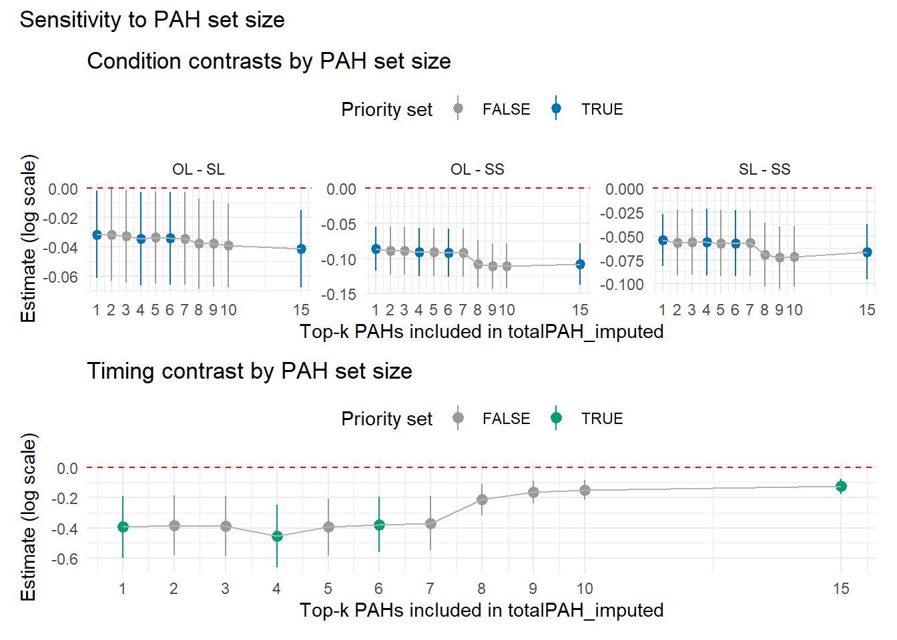
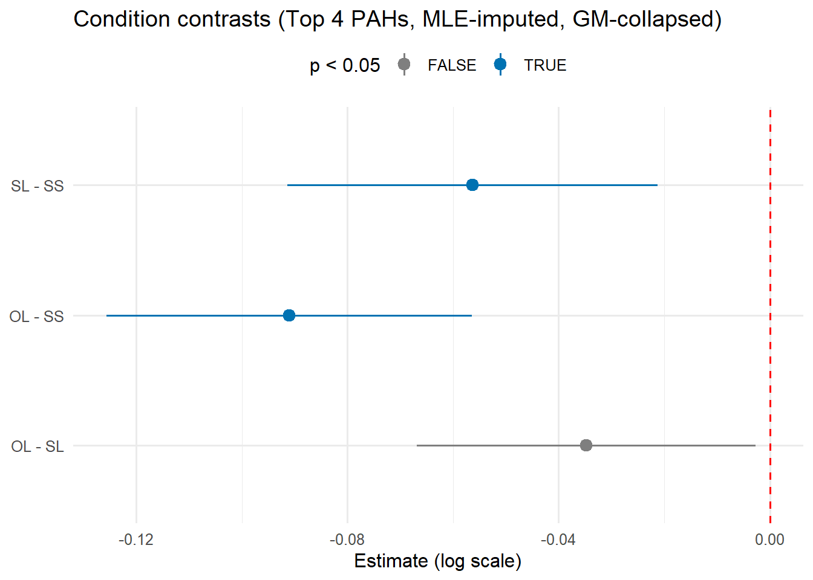
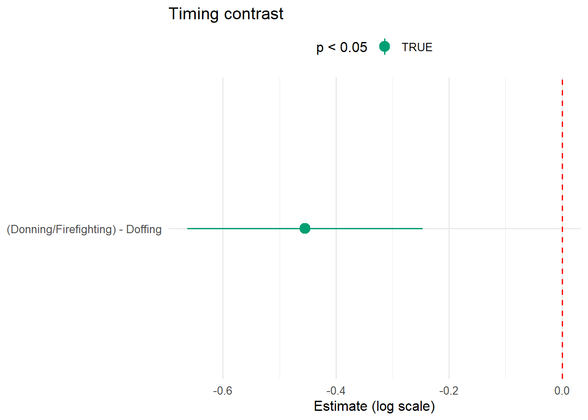
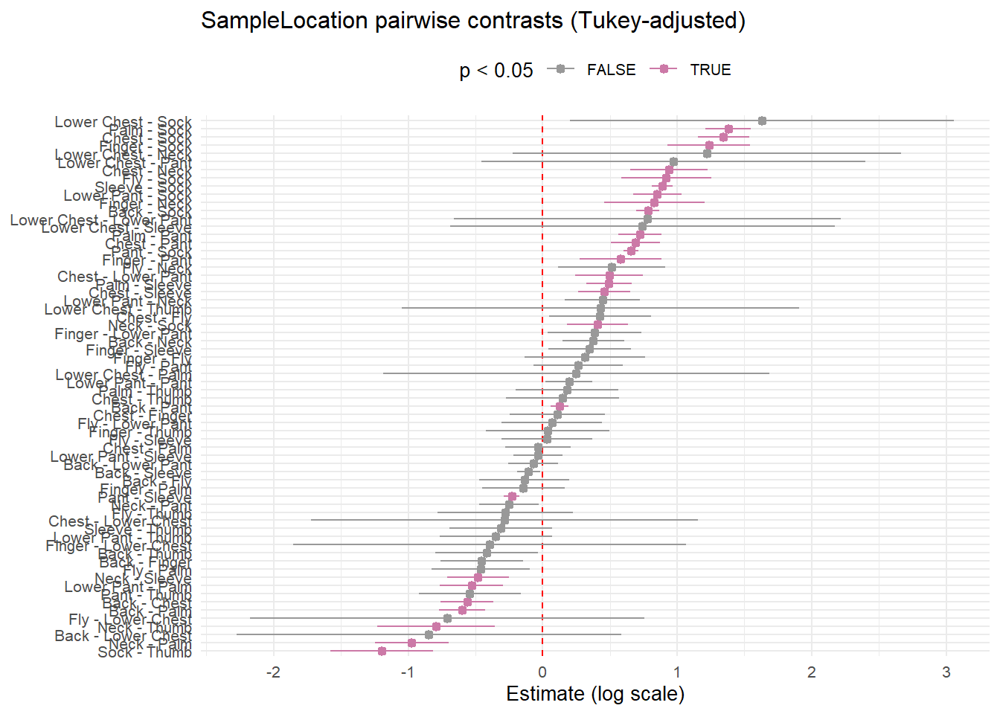
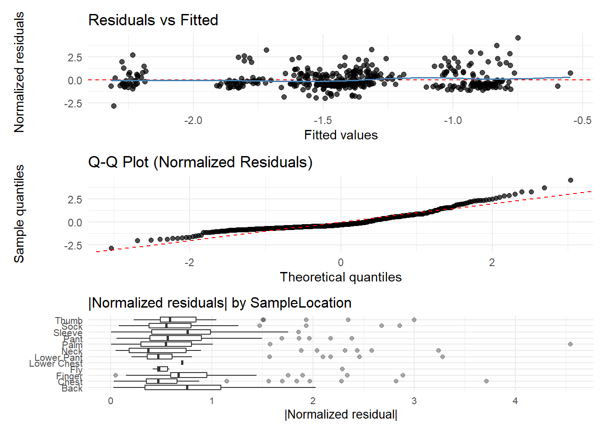

library(tidyverse)
library(ggplot2)
library(patchwork)
# Script outputs
out_09 <- "09_output"
out_10 <- "10_output"
out_11 <- "11_output"
out_12 <- "12_output"
# ---- Script 10 artifacts ----
step10_2 <- readRDS(file.path(out_10, "step2_artifacts.rds"))
step10_3 <- readRDS(file.path(out_10, "step3_artifacts.rds"))
qc10 <- readRDS(file.path(out_10, "step2_model_qc.rds"))
cond10 <- step10_2$condition_contrast_results
time10 <- step10_2$timing_results
# ---- Script 09 artifacts ----
step09_2 <- readRDS(file.path(out_09, "step2_results.rds"))
cond09 <- readRDS(file.path(out_09, "condition_contrast_results.rds"))
time09 <- readRDS(file.path(out_09, "timing_results.rds"))
# ---- Script 11 artifacts ----
step11_6 <- readRDS(file.path(out_11, "step6_artifacts.rds"))
step11_7 <- readRDS(file.path(out_11, "step7_artifacts.rds"))
step11_8 <- readRDS(file.path(out_11, "step8_artifacts.rds"))
cond11 <- step11_6$condition_contrast_results
time11 <- step11_6$timing_results
# ---- Script 12 artifacts ----
step12_1 <- readRDS(file.path(out_12, "step1_artifacts.rds"))
step12_2 <- readRDS(file.path(out_12, "step2_artifacts.rds"))
step12_3 <- readRDS(file.path(out_12, "step3_artifacts.rds"))
step12_4 <- readRDS(file.path(out_12, "step4_artifacts.rds"))
step12_5 <- readRDS(file.path(out_12, "step5_artifacts.rds"))
step12_6 <- readRDS(file.path(out_12, "step6_artifacts.rds"))
fit12 <- step12_5$fitstats
fixef12 <- step12_5$fixef
cond12 <- step12_5$condition_contrast_results
time12 <- step12_5$timing_results
loc12 <- step12_5$location_contrast_results
# Load diagnostics from dedicated files (saved in Step 7 append)
diag12 <- readRDS(file.path(out_12, "diag_summary.rds"))
p_diag_combined_12 <- readRDS(file.path(out_12, "p_diag_combined.rds"))Technical Analysis Update: PAH Exposure Modeling Sensitivity and Primary Model
1 1. Background and goals
This report summarizes the model-development workflow used to evaluate condition effects on total PAH exposure under sparse data and substantial non-detects.
The primary methodological decisions addressed were:
- How to handle non-detects.
- How many PAHs to include in the response definition.
- How to handle repeated measures.
- What model form to use for adjusted between-condition contrasts.
The sequence below follows the exploratory-to-primary progression:
- Script 10: non-imputed baseline boundary analysis.
- Script 09: sensitivity to imputation beta.
- Script 11: sensitivity to number of PAHs under consistent MLE imputation.
- Script 12: selected primary analysis.
2 2. Setup and artifact loading
3 3. Data and model framework carried across analyses
Across scripts, model comparison was done by varying one lever at a time while attempting to keep mechanisms stable where possible.
Common model framework (where applicable):
- Outcome on log scale.
- Mixed-effects model with random intercept for
ParticipantID. - Additive fixed effects:
Condition + Timing_new + SampleLocation. - Heteroscedastic residual structure by location when estimable.
- Main inferential target: pairwise Condition contrasts.
4 4. Baseline non-imputed boundary analysis (Script 10)
4.1 4.1 Objective
Script 10 re-established a non-imputed baseline under multiple response definitions:
- PAH set sizes: top1, top4, top6, top15.
- Response modes: all-data with ((x + c)), and detects-only with ((x)).
4.2 4.2 Model comparability tiers
qc10 |>
count(comparison_tier, variance_structure, fit_success, name = "n_runs") |>
arrange(comparison_tier)# A tibble: 2 × 4
comparison_tier variance_structure fit_success n_runs
<chr> <chr> <lgl> <int>
1 tier1_full heteroscedastic_varIdent TRUE 4
2 tier2_fallback homoscedastic TRUE 4Interpretation note: Script 10 included mixed comparability tiers (heteroscedastic primary fits and homoscedastic fallback fits).
4.3 4.3 Baseline boundary summaries
step10_3$condition_boundary# A tibble: 6 × 12
comparison_tier contrast n_runs n_sig prop_sig est_min est_max abs_est_min
<chr> <chr> <int> <int> <dbl> <dbl> <dbl> <dbl>
1 tier1_full OL - SL 4 2 0.5 0.352 0.667 0.352
2 tier2_fallback OL - SL 4 0 0 -0.210 -0.115 0.115
3 tier1_full OL - SS 4 0 0 -0.222 -0.0591 0.0591
4 tier2_fallback OL - SS 4 4 1 -0.459 -0.226 0.226
5 tier1_full SL - SS 4 4 1 -0.760 -0.536 0.536
6 tier2_fallback SL - SS 4 0 0 -0.260 -0.111 0.111
# ℹ 4 more variables: abs_est_max <dbl>, all_positive <lgl>,
# all_negative <lgl>, direction_stable <lgl>step10_3$timing_boundary# A tibble: 2 × 12
comparison_tier contrast n_runs n_sig prop_sig est_min est_max abs_est_min
<chr> <chr> <int> <int> <dbl> <dbl> <dbl> <dbl>
1 tier1_full (Donning/Fi… 4 3 0.75 -0.463 -0.268 0.268
2 tier2_fallback (Donning/Fi… 4 4 1 -1.19 -0.645 0.645
# ℹ 4 more variables: abs_est_max <dbl>, all_positive <lgl>,
# all_negative <lgl>, direction_stable <lgl>4.4 4.4 Key baseline takeaway
- Direction of the larger condition contrasts was generally stable.
- The smaller OL vs SL contrast showed weaker/less stable evidence.
- Timing direction was generally stable, with weaker significance in sparse settings.
5 5. Imputation beta sensitivity (Script 09)
5.1 5.1 Objective
Script 09 evaluated sensitivity of contrasts to imputation scaling choices while holding PAH set and model structure fixed.
5.2 5.2 Condition contrasts across beta settings
cond09 |>
select(beta_label, contrast, estimate, p.value, significant) |>
arrange(contrast, beta_label) beta_label contrast estimate p.value significant
1 Near-zero (0.01) OL - SL -0.03118488 1.375939e-01 FALSE
2 MLE (per-PAH) OL - SL -0.03429996 8.718225e-02 FALSE
3 LOD/2 (0.5) OL - SL -0.03994780 2.535879e-02 TRUE
4 LOD/√2 (0.707) OL - SL -0.04223759 8.398470e-03 TRUE
5 Near-LOD (0.9) OL - SL -0.04257232 3.397006e-03 TRUE
6 Near-zero (0.01) OL - SS -0.08270610 1.027920e-05 TRUE
7 MLE (per-PAH) OL - SS -0.09180139 7.345563e-07 TRUE
8 LOD/2 (0.5) OL - SS -0.10290431 6.016149e-09 TRUE
9 LOD/√2 (0.707) OL - SS -0.10295680 4.399590e-10 TRUE
10 Near-LOD (0.9) OL - SS -0.09984051 7.143486e-11 TRUE
11 Near-zero (0.01) SL - SS -0.05152122 1.112750e-02 TRUE
12 MLE (per-PAH) SL - SS -0.05750144 3.530216e-03 TRUE
13 LOD/2 (0.5) SL - SS -0.06295651 5.803953e-04 TRUE
14 LOD/√2 (0.707) SL - SS -0.06071921 3.035054e-04 TRUE
15 Near-LOD (0.9) SL - SS -0.05726819 1.754830e-04 TRUE5.3 5.3 Timing contrasts across beta settings
time09 |>
select(beta_label, contrast, estimate, p.value, significant) |>
arrange(beta_label) beta_label contrast estimate p.value
1 Near-zero (0.01) (Donning/Firefighting) - Doffing -1.1076507 1.342927e-05
2 MLE (per-PAH) (Donning/Firefighting) - Doffing -0.3775549 5.362997e-05
3 LOD/2 (0.5) (Donning/Firefighting) - Doffing -0.1735534 2.550592e-05
4 LOD/√2 (0.707) (Donning/Firefighting) - Doffing -0.1328714 6.536720e-06
5 Near-LOD (0.9) (Donning/Firefighting) - Doffing -0.1123548 3.174168e-06
significant
1 TRUE
2 TRUE
3 TRUE
4 TRUE
5 TRUE5.4 5.4 Key beta-sensitivity takeaway
- Main directional conclusions were robust to beta variation.
- Smaller contrasts showed more sensitivity in magnitude/statistical significance.
6 6. PAH-set sensitivity under consistent MLE imputation (Script 11)
6.1 6.1 Objective
Script 11 isolated sensitivity to the number of PAHs included in total exposure:
- top1 through top10, plus top15.
- Consistent imputation mechanism (PAH-level MLE beta).
- GM collapse and heteroscedastic mixed model retained.
6.2 6.2 Condition boundary summary
step11_7$condition_boundary# A tibble: 3 × 9
contrast n_runs n_sig prop_sig est_min est_max all_positive all_negative
<chr> <int> <int> <dbl> <dbl> <dbl> <lgl> <lgl>
1 OL - SL 11 4 0.364 -0.0414 -0.0317 FALSE TRUE
2 OL - SS 11 11 1 -0.111 -0.0860 FALSE TRUE
3 SL - SS 11 11 1 -0.0728 -0.0543 FALSE TRUE
# ℹ 1 more variable: direction_stable <lgl>6.3 6.3 Timing boundary summary
step11_7$timing_boundary# A tibble: 1 × 9
contrast n_runs n_sig prop_sig est_min est_max all_positive all_negative
<chr> <int> <int> <dbl> <dbl> <dbl> <lgl> <lgl>
1 (Donning/Fire… 11 11 1 -0.455 -0.125 FALSE TRUE
# ℹ 1 more variable: direction_stable <lgl>6.4 6.4 Sensitivity figure
step11_8$p_step8_combined
6.5 6.5 Key PAH-set takeaway
- Contrast directions remained broadly stable across PAH-set size.
- Contrast magnitudes shifted as more low-detect/imputed analytes were included.
7 7. Primary selected analysis (Script 12)
7.1 7.1 Final decision set
Primary analysis decisions:
- Response uses Top 4 PAHs.
- Non-detects imputed via PAH-level MLE beta (
elnormCensored). - Repeated measures handled via GM collapse within timing/location/participant strata.
- Main model is heteroscedastic LME.
7.2 7.2 Top-4 definition check
step12_1$top4_map# A tibble: 4 × 6
rank_detect pah_name pah_col lod_col n_detect pct_detect
<int> <chr> <chr> <chr> <int> <dbl>
1 1 Dibenzo(a,h)anthracene...31 Dibenzo(a… Dibenz… 48 10.7
2 2 Benzo(b)fluoranthene...27 Benzo(b)f… Benzo(… 39 8.71
3 3 Benzo(a)pyrene...26 Benzo(a)p… Benzo(… 24 5.36
4 4 Benzo(g,h,i)perylene...28 Benzo(g,h… Benzo(… 23 5.137.3 7.3 Imputation summary (Top 4)
step12_2$imputation_log |>
select(pah_name, beta_mle, n_detect, n_cens, fit_ok, fit_method)# A tibble: 4 × 6
pah_name beta_mle n_detect n_cens fit_ok fit_method
<chr> <dbl> <int> <int> <lgl> <chr>
1 Dibenzo(a,h)anthracene...31 0.207 48 400 TRUE elnormCensored_ml…
2 Benzo(b)fluoranthene...27 0.193 39 409 TRUE elnormCensored_ml…
3 Benzo(a)pyrene...26 0.142 24 424 TRUE elnormCensored_ml…
4 Benzo(g,h,i)perylene...28 0.112 23 425 TRUE elnormCensored_ml…7.4 7.4 Collapse and model fit checks
step12_3$step3_qc$n_rows_pre
[1] 448
$n_rows_post
[1] 418
$n_collapsed
[1] 30
$n_response_nonmissing
[1] 418
$expected_post_rows
[1] 418step12_4$step4_qc# A tibble: 1 × 9
n_rows_model n_participants n_condition n_timing n_location aic bic logLik
<int> <int> <int> <int> <int> <dbl> <dbl> <dbl>
1 418 23 3 2 12 444. 556. -194.
# ℹ 1 more variable: n_warnings <int>7.5 7.5 Primary fit statistics and fixed effects
fit12# A tibble: 1 × 4
n_obs aic bic logLik
<int> <dbl> <dbl> <dbl>
1 418 444. 556. -194.fixef12 |>
select(term, estimate, std_error, df, t_value, p_value, fold_change, pct_change)# A tibble: 15 × 8
term estimate std_error df t_value p_value fold_change pct_change
<chr> <dbl> <dbl> <dbl> <dbl> <dbl> <dbl> <dbl>
1 (Intercept) -1.93 0.112 381 -17.3 8.90e-50 0.145 -85.5
2 ConditionSL 0.0347 0.0163 381 2.13 3.38e- 2 1.04 3.54
3 ConditionSS 0.0910 0.0176 381 5.17 3.74e- 7 1.10 9.53
4 Timing_newD… 0.455 0.106 381 4.29 2.27e- 5 1.58 57.6
5 SampleLocat… 0.563 0.0993 381 5.67 2.84e- 8 1.76 75.6
6 SampleLocat… 0.453 0.157 381 2.88 4.19e- 3 1.57 57.3
7 SampleLocat… 0.137 0.171 381 0.799 4.25e- 1 1.15 14.7
8 SampleLocat… 0.847 0.727 381 1.17 2.45e- 1 2.33 133.
9 SampleLocat… 0.0687 0.0941 381 0.730 4.66e- 1 1.07 7.11
10 SampleLocat… -0.375 0.117 381 -3.22 1.39e- 3 0.687 -31.3
11 SampleLocat… 0.597 0.0875 381 6.83 3.44e-11 1.82 81.7
12 SampleLocat… -0.126 0.0341 381 -3.70 2.50e- 4 0.882 -11.8
13 SampleLocat… 0.105 0.0443 381 2.37 1.82e- 2 1.11 11.1
14 SampleLocat… -0.782 0.0429 381 -18.2 6.56e-54 0.457 -54.3
15 SampleLocat… 0.417 0.195 381 2.13 3.35e- 2 1.52 51.7 7.6 7.6 Primary contrasts
7.6.1 Condition contrasts (primary)
cond12 |>
select(contrast, estimate, SE, df, t.ratio, p.value, significant)# A tibble: 3 × 7
contrast estimate SE df t.ratio p.value significant
<chr> <dbl> <dbl> <dbl> <dbl> <dbl> <lgl>
1 OL - SL -0.0347 0.0163 381 -2.13 0.0851 FALSE
2 OL - SS -0.0910 0.0176 381 -5.17 0.00000112 TRUE
3 SL - SS -0.0563 0.0178 381 -3.16 0.00483 TRUE 7.6.2 Timing contrast (secondary)
time12 |>
select(contrast, estimate, SE, df, t.ratio, p.value, significant)# A tibble: 1 × 7
contrast estimate SE df t.ratio p.value significant
<chr> <dbl> <dbl> <dbl> <dbl> <dbl> <lgl>
1 (Donning/Firefighting) - Dof… -0.455 0.106 381 -4.29 2.27e-5 TRUE 7.6.3 Sampling location contrasts (exploratory)
loc12 |>
select(contrast, estimate, SE, df, t.ratio, p.value, significant) |>
arrange(p.value)# A tibble: 66 × 7
contrast estimate SE df t.ratio p.value significant
<chr> <dbl> <dbl> <dbl> <dbl> <dbl> <lgl>
1 Back - Sock 0.782 0.0429 381 18.2 0 TRUE
2 Chest - Sock 1.35 0.0974 381 13.8 0 TRUE
3 Finger - Sock 1.24 0.156 381 7.92 0 TRUE
4 Lower Pant - Sock 0.851 0.0918 381 9.27 0 TRUE
5 Palm - Pant 0.723 0.0813 381 8.90 0 TRUE
6 Palm - Sock 1.38 0.0853 381 16.2 0 TRUE
7 Pant - Sock 0.656 0.0280 381 23.4 0 TRUE
8 Sleeve - Sock 0.887 0.0393 381 22.6 0 TRUE
9 Pant - Sleeve -0.231 0.0303 381 -7.63 6.49e-13 TRUE
10 Chest - Pant 0.689 0.0939 381 7.34 7.47e-11 TRUE
# ℹ 56 more rows7.7 7.7 Primary figures
step12_6$p_condition_step6
step12_6$p_timing_step6
step12_6$p_location_step6
8 8. Model diagnostics (Script 12)
8.1 8.1 Numeric diagnostics
diag12# A tibble: 1 × 6
n_obs resid_norm_mean resid_norm_sd n_abs_resid_gt2 n_abs_resid_gt3
<int> <dbl> <dbl> <int> <int>
1 418 -2.18e-15 0.969 23 5
# ℹ 1 more variable: pct_abs_resid_gt3 <dbl>8.2 8.2 Diagnostic plots
p_diag_combined_12
Diagnostic interpretation (brief): no major structural violations were evident; mild tail behavior and sparse location-specific outliers remain expected caveats.
9 9. Synthesis and forward manuscript path
9.1 9.1 What appears robust
- Major condition-direction findings are stable across sensitivity analyses.
- Timing-direction finding is generally stable.
- Primary model results are consistent with exploratory boundary analyses.
9.2 9.2 Where uncertainty remains
- Smaller between-condition differences (particularly OL vs SL) are less stable.
- Location-specific contrasts are exploratory due to sparse support and many pairwise tests.
9.3 9.3 Proposed manuscript framing
- Present Script 12 as the pre-specified/selected primary model.
- Use Scripts 09, 10, and 11 to document robustness and bounds.
- Explicitly state that inference is conditional on single imputation (imputation uncertainty not propagated).